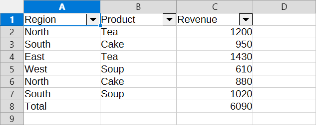

Database ranges
A database range is LibreOffice's named block of rows under a header row (Data ▸ Define Range), with filter buttons on its header. The functions for database ranges call one a table: addtable!, table, settotals! and the type Table.
This is a narrower sense than readtable's, which reads any block of rows under a header row, whether it is a database range or not (see the Tutorial). Given table_name, readtable reads a database range by its name instead.
Adding or changing a database range needs a file open for writing (mode="rw", or made by newods); table and the readers also work on files opened for reading.
using OpenDocumentSpreadsheets
xf = newods("Sales")
sh = xf["Sales"]
sh["A1:C1"] = ["Region" "Product" "Revenue"]
rows = [("North", "Tea", 1200), ("South", "Cake", 950), ("East", "Tea", 1430),
("West", "Soup", 610), ("North", "Cake", 880), ("South", "Soup", 1020)]
for (i, r) in enumerate(rows)
sh[i+1, 1] = r[1]; sh[i+1, 2] = r[2]; sh[i+1, 3] = r[3]
end
setColumnWidth(sh, "A:C"; width = 12)
t = addtable!(sh, "A1:C7"; name = "Sales")
settotals!(t, "Region" => "Total", "Revenue" => :sum) # a totals row under the range
writeods("sales.ods", xf)
Working with a range
appendtable!(t, (Region = ["East"], Product = ["Cake"], Revenue = [700])) # rows added inside it
gettablerange(t, "Revenue") # the column's data cells
OpenDocumentSpreadsheets.table(xf, "Sales") # the range, by name
writeods("sales.ods", xf; overwrite = true)
readtable("sales.ods", "Sales"; table_name = "Sales") # read it by name
people = (Name = ["Ann", "Bob"], Team = ["North", "South"]) # or a DataFrame
writetable("people.ods", people; sheetname = "People", as_table = true, table_name = "People",
overwrite = true)
deletetable!(t)LibreOffice's database ranges
- A range's name is formed as a named range's is, but is apart from them.
- Ranges may overlap, and a range may be its header row alone.
- A totals row's settings are read from its cells' formulas, which are written as LibreOffice writes them (
SUBTOTAL(109,$Sales.$C$2:$C$7)).
Not available
LibreOffice has no styles for database ranges: format their cells instead. style (and writetable's table_style) can only be nothing or "None"; any other style is an error.